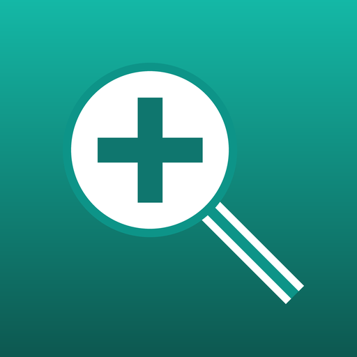
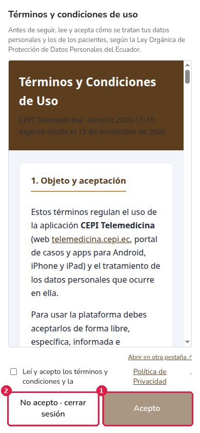
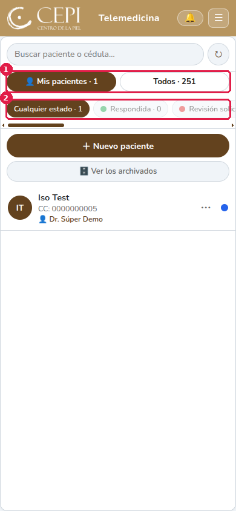
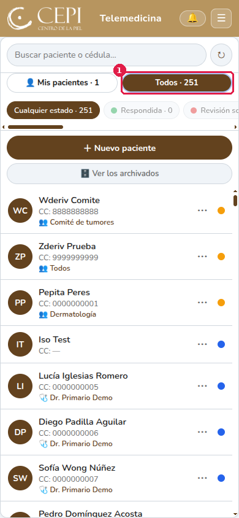
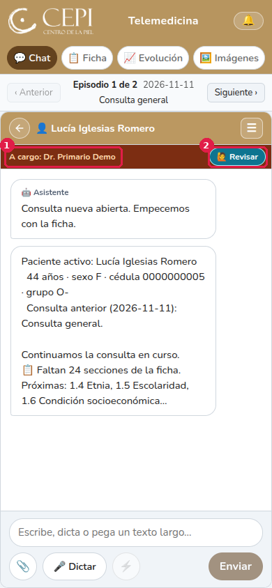
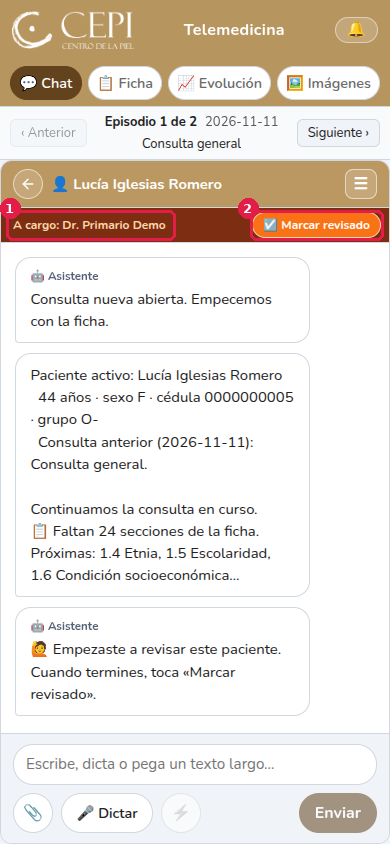
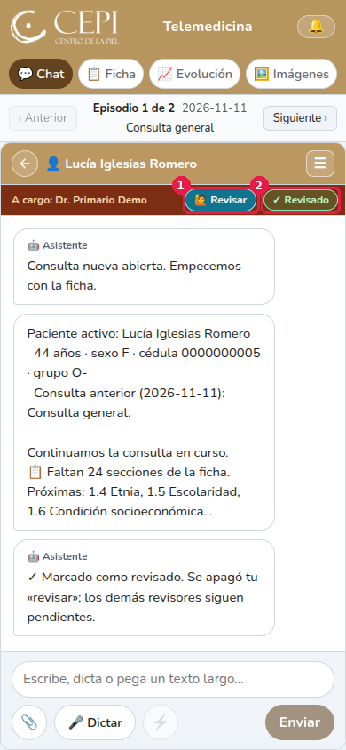
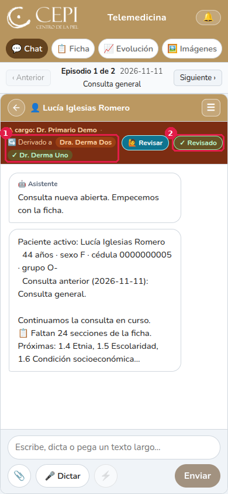

Semana del 12 al 20 de noviembre de 2026
Todo lo de este documento vale en la app de iPhone, en la de Android y en la versión web. Las capturas son de la versión web en tamaño de teléfono, con pacientes de prueba. En rojo, lo nuevo.
Al iniciar sesión, cada usuario lee y acepta los términos y condiciones de uso. El texto explica cómo se tratan sus datos personales y los de los pacientes, según la Ley Orgánica de Protección de Datos Personales del Ecuador.
Hay que marcar «Leí y acepto» y tocar «Acepto». «No acepto» cierra la sesión. Hasta aceptar no se ve ningún paciente. Se pide una sola vez, y otra vez solo si los términos cambian.
El texto también está publicado en telemedicina.cepi.ec/terminos.html.
Dónde: al iniciar sesión.

La lista de pacientes tiene dos filtros que se combinan:
Fila 1: «👤 Mis pacientes» o «Todos». Al abrir la app está elegido «Mis pacientes». Ahí aparecen los pacientes que usted tiene o tuvo a cargo alguna vez: los que ingresó, los que le derivaron, los que le asignaron y los que empezó a revisar.
Fila 2: el estado de la ficha (Respondida, Revisión solicitada…). Cada estado dice cuántos pacientes hay dentro de la fila 1.
El buscador por nombre o cédula busca siempre en todos los pacientes, aunque esté elegido «Mis pacientes».
Dónde: lista de pacientes, debajo del buscador.


Debajo del nombre del paciente hay una franja que siempre está a la vista mientras la consulta está abierta. Dice quién tiene a cargo la consulta («A cargo: …» o «Sin responsable») y a quién se derivó. A la derecha están los botones de revisión.
Al tocar la parte de «A cargo» se abre la ventana de «Derivar».
Dónde: paciente → Chat, debajo del nombre.

1. «🙋 Revisar». Indica que usted empezó a revisar al paciente. No le quita la consulta ni la derivación a nadie: el responsable sigue siendo el mismo y los otros médicos siguen con su revisión pendiente. Varios médicos pueden revisar el mismo paciente a la vez.
2. «☑️ Marcar revisado». Aparece en lugar de «Revisar». Tóquelo cuando termine. Se apaga su aviso «revisar» y queda escrito en el historial del caso.
3. «✓ Revisado». Es una etiqueta, no un botón: indica que usted ya lo revisó al menos una vez. Vuelve a aparecer «🙋 Revisar» por si hace falta otra ronda.
Dónde: la franja de la consulta y el menú ☰ del paciente.


Cuando un caso se deriva a varios médicos, cada uno tiene su propio estado. En la franja se ve a quién se derivó: los que ya marcaron «Revisado» llevan ✓ y en verde; los que faltan aparecen en naranja.
Que un médico marque «Revisado» no cierra el caso para los demás. «Responder interconsulta» sí lo cierra para todos.
Dónde: paciente → Chat, franja «Derivado a».

Antes, si un caso derivado no se cerraba en 24 horas, la campana 🔔 y el aviso «revisar» quedaban encendidos para siempre, aunque el médico ya hubiera respondido. Además, el caso dejaba de figurar como «Derivado a».
Ahora el aviso se apaga cuando usted marca «Revisado» o cuando alguien responde la interconsulta, sin importar cuánto tiempo pasó.
Android: versión 2.7.9, publicada para los testers.
iPhone y iPad: versión 1.6 (28), enviada a Apple. Llega a TestFlight y al App Store cuando Apple la apruebe.
Web: ya tiene todo lo de este documento en telemedicina.cepi.ec.